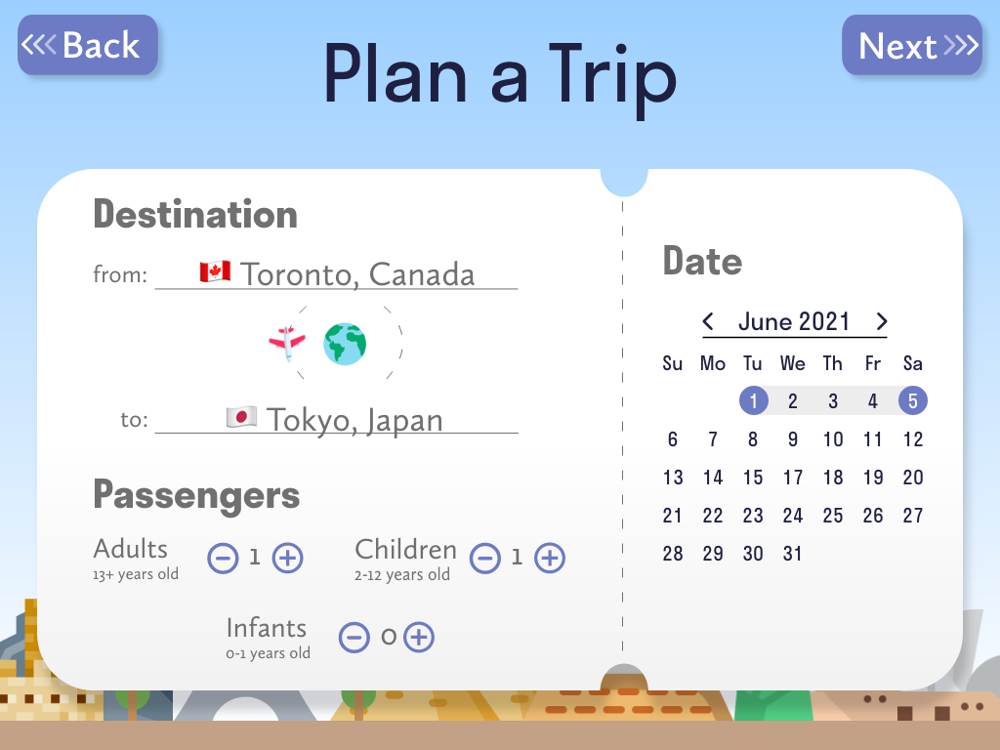

Timeline: 9 days (May 19, 2021 to May 28, 2021)
Topic: Tourism and Education
Number of team members: 2
My role: All stages of the project
The Problem:
When you ride a plane, how often do you read the in-flight magazines? I’ll take a look at them once in a while, especially during flights that don’t have movies and TV shows to watch; however, the content in these magazines are not always interesting or related to the destination of my flight, which causes me to skim and skip many pages.
In a design challenge by Adobe and Southwest Airlines, my teammate and I were challenged to design a travel guide tablet app for plane passengers as a substitution for in-flight magazines. They wanted this app to help passengers use their time on plane flights to learn more about their specific travel destination and for the app to provide a more personalized experience.
My teammate and I decided to focus on families with children as our app’s target users because from our experience when we were children, our parents did most of the planning for trips since many travel guides are aimed at adults. Plus, children can get bored easily on long flights and the in-flight magazines likely will not interest them. As a result, we saw a great opportunity for our app to entertain them during these flights.
Our Goal
How might we turn the time families spend on a plane ride into an opportunity for them to plan and learn about their vacation destinations together?
Learning about their vacation destination would include learning about places they could visit, basic language, and cultural practices.
Research
First, it was important for us to see if other families faced the same problems or if this was just the experience for my teammate and I. Through user interviews, we learned more about families with children and confirmed that this was the audience we wanted as our app's target users. The following points are two general thoughts that we learned from our users:
- We learned that parents are not opposed to having their child plan parts of their vacation. However, they don’t ask their children to plan it as they assume they won’t have much input or suggestions.
- When asked what activities they wished were available as in-flight entertainment, some parents answered they wish there were more activities they could do together with their child.
From our user interviews, we also gained 4 specific insights that helped guide us as we moved on to the ideation phase.
- People thought that difficult experiences that happen because of a language barrier were often related to ordering food.
- When picking places to go on their trip, many people relied on top tourist attraction lists that showed popular places people liked to visit. Considering whether or not these places were family-friendly places was important.
- Figuring out how much they will spend on their trip is important
- People thought that games and visuals helped them with learning in the past
Ideation
Based on our research insights, we wanted our app to include
- Something that could help users with food vocabulary
- A list of popular and family-friendly tourist attractions
- Something to help users calculate the cost of how much they would spend
- Games and visuals to help with learning
After brainstorming features, sketching ideas, and critiquing our ideas to improve them, we came up with a solution which we built in Adobe XD.
The Solution: Travel Kitt!
Travel Kitt provides all the essentials families will need to plan their vacations!
Stage 1: Entering Travel Information
Users will start by entering their travel information so that the app can personalize the information and the cost of activities based on the number of people. The interface resembles a boarding pass ticket to make the interface more interesting for children.
Stage 2: The Travel Book
The app will then create a book for the trip; each trip gets its own book. In the book, users can create an itinerary, read information about their destination, and save pictures to the scrapbook pages. Families can learn about their destination with the help of a friendly kitten avatar that acts as a their tour guide. Through fun dialogue, the kitten helps engage children while it recommends tourist attractions, teaches about language and culture, appears in scrapbook memories, and much more. The book created for each trip is saved to a library in the app which users can view at the app’s starting page. This allows them to easily view past vacation scrapbook pages and remember the great times they had in past vacations.
Based on the feedback from our research, we also included the following features which can be found in each travel book:
- A food section to help users with food vocabulary
- A list of popular and family-friendly tourist attractions presented as a travel brochure (this looks more appealing to kids compared to a written list of recommendations)
- A total sum column in the itinerary to help users calculate the cost of how much they would spend
- Games to practice vocabulary and learn more about their destination and emojis in the paragraphs since users expressed how visuals helped them with learning
Through user testing, we gained positive feedback about the concept and look of our app. We saw some struggles with navigating between some of the screens so we changed the location of some buttons to improve the flow of the app.
And that’s Travel Kitt! Just like how one packs all their travel essentials into their travel kit, we made sure to pack the planning and learning essentials that we learned about from our user research into our app to provide families with a helpful and engaging source of information that they can use on the plane. You can view our app’s prototype by clicking the button below. Enjoy!
To continue looking at my work, you can go back to the UX Design projects page or click the buttons below to see the projects I worked on before or after my Travel Kitt project. Thank you for looking at my work!